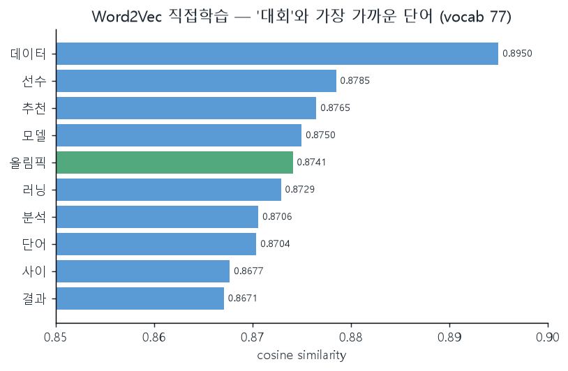
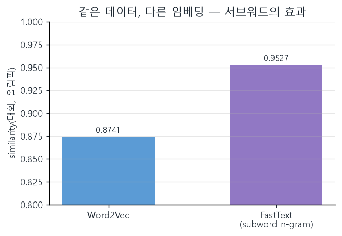

CH 01 횟수는 의미를 못 담는다 — 무엇이 부족했나#
BoW나 TF-IDF는 문서를 "어떤 단어가 몇 번 나왔나"의 표로 바꾼다. 분류기에 넣기엔 충분하지만, 표의 각 열은 서로 완전히 독립된 축이다. '대회'와 '올림픽'은 의미가 맞닿아 있어도, 횟수 표에서는 서로 아무 관계 없는 두 칸일 뿐이다. 같은 문서에 둘 다 자주 나오면 통계적 공기(共起)는 잡히지만, 단어 자체가 "가깝다"는 정보는 표 어디에도 적히지 않는다.
예측 기반 임베딩은 이 지점을 다르게 푼다. 단어를 고정 길이 벡터로 바꾸되, 비슷한 문맥에 등장하는 단어가 비슷한 좌표를 갖도록 학습한다. 학습이 끝나면 단어 사이의 거리가 곧 의미의 유사도가 된다. 횟수로는 못 담던 관계가, 벡터 공간의 좌표로 옮겨 적히는 셈이다.
"의미가 가깝다"는 건 사람의 감각인데, 그게 정말 하나의 숫자로 떨어질까? 그리고 그 숫자는 단어가 같이 등장한 횟수와 뭐가 다른가 — 결국 빈도를 다른 방식으로 센 것뿐 아닐까? 코드로 직접 학습시켜 most_similar 출력을 보면 답이 나온다.
CH 02 Word2Vec 학습 — 명사 77개로 '의미의 지도' 그리기#
실습 데이터는 한국어 뉴스 문장이다. 정제한 텍스트를 KoNLPy의 Okt로 명사만 추출하고, 2글자 이상 토큰만 남겨 학습 입력으로 만들었다. 토큰을 20개씩 끊어 문장 리스트로 묶은 뒤, gensim Word2Vec에 넣었다.
from gensim.models import Word2Vec
model = Word2Vec(
sentences=sentences,
sg=1, # Skip-gram: 중심 단어로 주변 단어를 예측
vector_size=100, # 단어 하나를 100차원 벡터로
window=3, # 중심 단어 좌우 3개까지 문맥으로
min_count=1, # 1번 등장한 단어도 포함
workers=2,
epochs=100,
seed=42, # 재현용 난수 고정
)
print('Word2Vec 단어 사전 크기:', len(model.wv.index_to_key))여기서 sg=1이 핵심 선택이다. Skip-gram은 중심 단어 하나를 입력해 주변 단어들을 맞히는 방향으로 학습한다. 이 작은 말뭉치에서 학습된 단어 사전 크기는 77개. 작지만, 의미의 지도가 그려지기엔 충분한 규모다.
Skip-gram이 빠른 데는 이유가 있다. 입력이 원-핫 벡터(수만 차원 중 단 하나만 1)라서 가중치 행렬과 통째로 곱하면 대부분이 0과의 무의미한 곱셈이 된다. 그래서 실제로는 곱셈 대신 해당 단어 인덱스의 행을 그대로 꺼내는 룩업(look-up)으로 처리한다. 출력층도 단어장 전체에 소프트맥스를 돌리는 대신 정답 1개와 오답 몇 개(네거티브 샘플링)만 계산해, 연산을 O(V)에서 사실상 O(K)로 끌어내린다. 의미를 담는 표현치고는 의외로 가벼운 셈법이다.
CH 03 유사도라는 숫자 — '대회' 옆에 무엇이 모이나#
model.wv.most_similar('대회')는 '대회' 벡터와 코사인 유사도가 높은 단어를 순서대로 돌려준다. 학습이 의미를 잡았다면 스포츠·대회 맥락의 단어가 위로 올라와야 한다.
[('데이터', 0.8950), ('선수', 0.8785), ('추천', 0.8765),
('모델', 0.8750), ('올림픽', 0.8741), ('러닝', 0.8729),
('분석', 0.8706), ('단어', 0.8704), ('사이', 0.8677),
('결과', 0.8671)]
대회-올림픽 유사도: 0.87414414
의미가 숫자로 떨어졌다. '선수'·'올림픽'처럼 대회와 직결되는 단어가 0.87대로 올라왔고, similarity('대회','올림픽')은 0.87414414다. 다만 '데이터'·'모델'·'러닝'이 상위에 섞인 건 말뭉치 탓이다. 명사 77개짜리 작은 데이터에서는 여러 주제 단어가 한 묶음으로 학습돼 좌표가 서로 가까워진다 — 의미 지도가 그려지긴 했으되, 해상도는 데이터 크기에 묶여 있다.

유사도는 "같이 등장한 횟수"를 직접 센 값이 아니다. '대회'와 '올림픽'이 한 문장에 붙어 나온 횟수가 아니라, 둘이 비슷한 이웃 단어들에 둘러싸이도록 100차원 좌표가 조정된 결과다. 그래서 같은 문장에 한 번도 안 붙어도, 문맥이 닮았다면 가까워질 수 있다. 빈도 세기와 결정적으로 갈리는 지점이 여기다.
CH 04 FastText — 같은 데이터, 다른 유사도가 나오는 이유#
FastText는 Word2Vec과 학습 방식이 거의 같지만 한 가지가 다르다. 단어를 통째로 하나의 벡터로 보지 않고, 단어 안의 글자 n-gram(서브워드)까지 쪼개 함께 학습한다. 단어 벡터는 그 서브워드 벡터들의 합으로 구성된다. 동일한 명사 77개 데이터로 FastText를 학습한 뒤 같은 두 단어의 유사도를 재 봤다.
FastText 단어 사전 크기: 77
FastText 대회 유사 단어:
[('자연어', 0.9646), ('데이터', 0.9601), ('아이폰', 0.9577),
('컴퓨터', 0.9565), ('분석', 0.9532), ('올림픽', 0.9528),
('형태소', 0.9516), ('갤럭시', 0.9505), ('단어', 0.9483),
('모델', 0.9474)]
FastText 대회-올림픽 유사도: 0.95275533
같은 두 단어인데 유사도가 0.87414414 → 0.95275533으로 올랐다. 사전 크기는 77개로 동일한데 값이 전반적으로 더 높아진 것이다. 원인은 서브워드다. FastText는 글자 n-gram을 공유하는 단어끼리 벡터가 비슷해지는 경향이 있어, 작은 말뭉치에서는 전체 유사도가 위로 쏠린다. 미등록 단어(OOV)에 강하다는 FastText의 장점도 같은 메커니즘에서 나온다 — 처음 보는 단어도 글자 조각으로 벡터를 합성할 수 있기 때문이다.

"FastText가 유사도가 더 높으니 더 좋다"가 아니다. 더 높은 건 서브워드를 공유하는 단어들을 함께 끌어당긴 결과지, 의미를 더 정확히 잡아서가 아닐 수 있다. 작은 데이터에서 값이 위로 쏠리는 것도 이 때문이다. 선택 기준은 데이터다 — 신조어·오타·미등록어가 많은 한국어 텍스트라면 FastText의 서브워드가 강점이 되고, 어휘가 깔끔하게 고정된 도메인이라면 Word2Vec으로 충분하다.
학습한 모델은 .model로 저장하고 재로드해도 단어 사전 크기 77이 그대로 유지됐다. 한 번 그린 의미 지도를 파일로 들고 다니며 재사용할 수 있다는 뜻이다.
CH 05 토픽 모델링 — 라벨 없이 뉴스에서 주제를 캐다#
임베딩이 "단어를 좌표로" 옮겼다면, 토픽 모델링은 "문서를 주제로" 묶는다. 정답 라벨 없이(비지도) 여러 문서를 훑어, 자주 함께 등장하는 단어 묶음을 하나의 주제로 추정한다. 실습은 한국어 뉴스 데이터를 Okt로 명사화한 뒤 LDA로 토픽을 뽑았다.
Topic 0: 인공, 지능, 인공 지능, 반도체, 기술 개발, 에너지, ... Topic 1: 안전, 사회, 플랫폼, 클라우드, 교통, 보안, 우주, ... Topic 5: 경기, 훈련, 축구, 우승, 야구, 관심, 진행, ... Topic 6: 선수, 중요하다, 감독, 야구, 리그, 기후, 과학, ... Topic 7: 전시, 공연, 축제, 영화, 금리, 음악, 관객, ...
라벨을 준 적이 없는데도 묶음에 결이 보인다. Topic 0은 인공지능·반도체·기술, Topic 5·6은 경기·선수·야구 같은 스포츠, Topic 7은 전시·공연·영화 같은 문화다. 사람이 "이건 IT 주제"라고 적어 주지 않았는데, 단어 공기 패턴만으로 주제 덩어리가 갈라졌다.
토픽이 사람이 보기에 늘 깔끔하진 않다. Topic 6에 '선수·감독·야구'와 함께 '기후·과학·알고리즘'이 섞여 들어왔다. LDA가 뽑는 건 "의미적으로 정의된 주제"가 아니라 "통계적으로 함께 등장한 단어 분포"다. 그래서 토픽의 이름은 결국 사람이 상위 단어를 보고 해석해 붙인다 — 모델은 묶음을 주고, 의미 부여는 분석가의 몫이다.
CH 06 정적 임베딩의 끝 — '배'는 왜 항상 같은 벡터인가#
Word2Vec과 FastText는 학습이 끝나면 단어 하나당 벡터가 딱 하나로 고정된다. 이걸 정적 임베딩이라 부른다. 문제는 문맥에 따라 뜻이 갈리는 단어다. "배가 아파서 병원에 갔다"의 배(복부), "바다 위에 배가 떠 있다"의 배(선박), "맛있는 배를 먹었다"의 배(과일) — 정적 임베딩은 이 셋을 모두 같은 벡터로 변환한다. 주변 문맥이 달라도 좌표는 하나뿐이라, 서로 다른 의미가 한 점으로 평균화돼 버린다.
그럼 단어 하나에 의미가 여럿일 때, 임베딩은 어느 의미를 좌표로 들고 있는 걸까? 답은 "그 단어가 학습 데이터에서 쓰인 모든 의미의 평균 어딘가"다. 어느 한 의미도 정확히 못 가리킨다는 뜻이다. 이 한계를 풀려면 단어가 아니라 문장 속의 단어를 임베딩해야 한다.
여기서 동적(문맥) 임베딩이 등장한다. BERT·GPT 같은 트랜스포머 기반 모델은 단어 자체가 아니라 문장 전체를 보고 의미를 잡아, 같은 '배'라도 주변 단어에 따라 서로 다른 벡터를 부여한다. 워드 임베딩의 흐름으로 보면 통계 기반(LSA)에서 신경망 정적 임베딩(2013, Word2Vec·GloVe)으로, 다시 문맥 동적 임베딩(2018, BERT·GPT)으로 이어지는 갈래의 한 칸이 오늘 자리다.
오늘의 결론은 두 줄이다. 첫째, 횟수로는 못 담던 의미가 학습한 임베딩에선 코사인 유사도라는 숫자로 떨어진다 — '대회'–'올림픽' 0.87이 그 증거다. 둘째, 같은 데이터라도 표현 단위(단어 통째 vs 서브워드)가 다르면 그 숫자가 달라진다 — FastText에서 0.95로 올라간 게 그 증거다. 그리고 그 숫자가 단어당 하나로 고정된다는 점이 정적 임베딩의 천장이고, 동적 임베딩은 바로 그 천장을 뚫기 위해 나온 다음 칸이다.
📚 근거 출처
- 실습 코드 —
from_colab_llm/0625-s(word2vec_모델_실습하기 · 토픽_모델링_실습하기) - 강의 PDF — 자연어처리_텍스트분류
- 공식 문서 — gensim Word2Vec·FastText